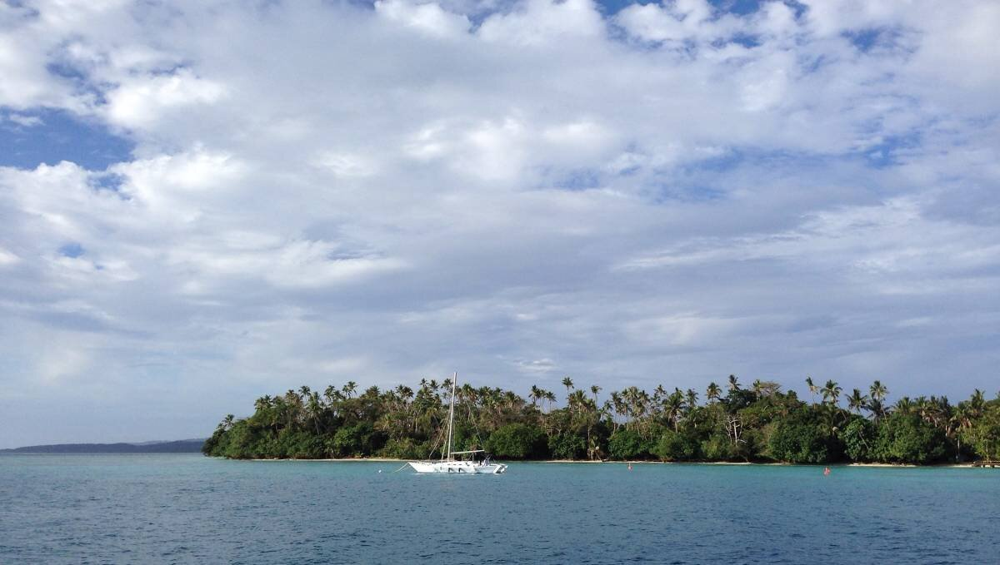

marshall islands
In November, we sailed to the Marshall Islands. The sail from Fiji took us 24 days. We spent many days becalmed, without wind—typical of an area of converging tradewinds. The ITCZ is strong here.
We aimed straight for Majuro, and stayed there for a few months before skipping to Japan. Our original plan was to stop in Micronesia (Kosrae) and Guam, but because of dinghy issues we skipped them—also, we were terribly eager to arrive to Chichijima.
Blog posts about our stay in the Marshall Islands:
